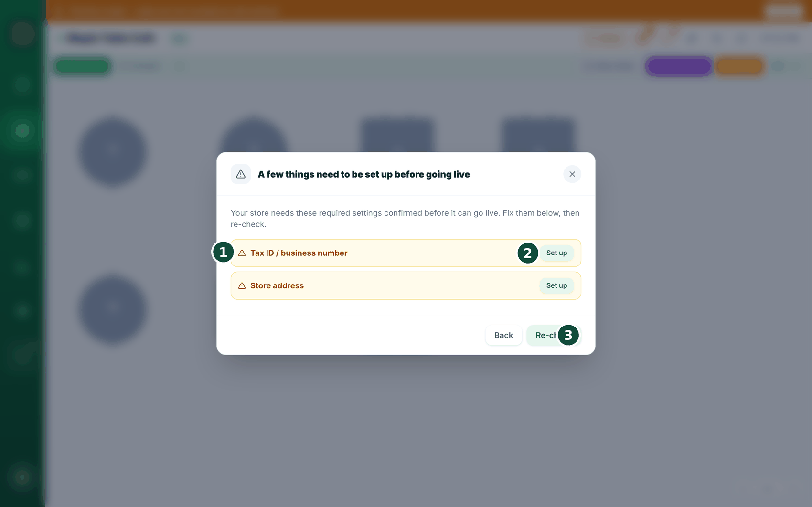
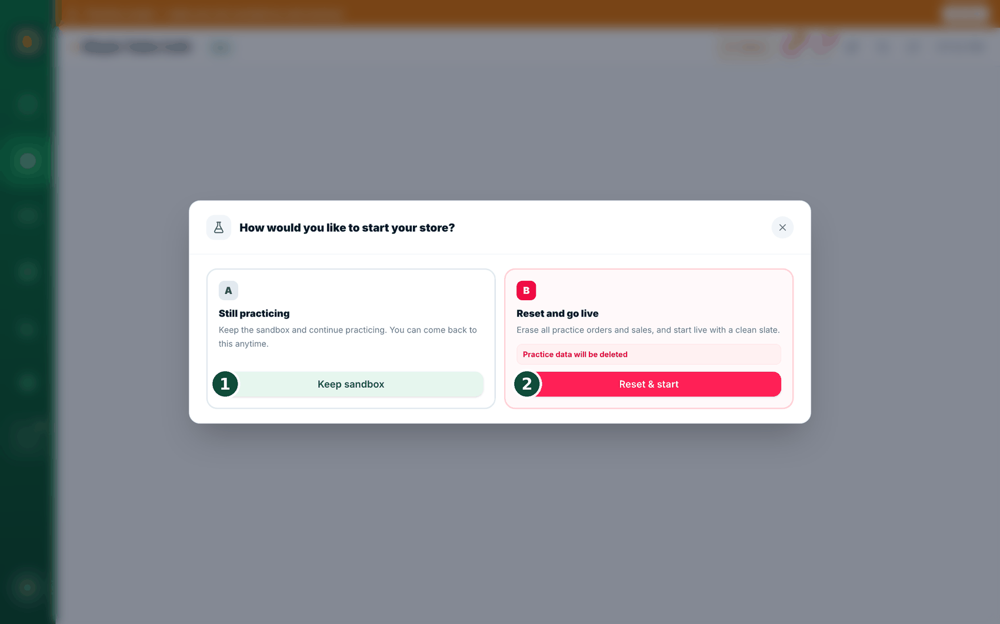

24Going live
Here is how to move from practice mode to real trading. You start in practice mode. Tap anything, ring up pretend orders — none of it counts as real takings. When you're ready to actually trade, you switch to live.
Where to find it
While you're in practice mode there's a strip across the top of the screen: "Practice mode — sales are not counted as real revenue". Tap "Go Live" next to it.

Do it on the main till. Going live can only be done from your main register: "Only the main POS can switch the store to live. Open this on your main register."
Fill in the checklist
- If anything's still missing, a checklist appears first — store name, country, currency, timezone, business type, confirmed tax rate, tax ID, store address, and at least one menu item.
- Tap "Set up" on a line to jump straight to that setting. When you've filled them in, tap "Re-check".

Why block it? If you start trading with your tax rate or timezone still blank, your first day's takings get recorded wrong — and that's much more painful to fix afterwards. So we ask you to confirm it once, up front.
Choose how to start
- Then pick one of three — "Still practicing" (carry on practising, nothing changes), "Reset and go live" (wipe the practice records and start clean), or "Already in business" (keep everything you've rung up so far, and tell us which day you actually opened).
- You get one more confirmation screen listing exactly what gets deleted and what stays.
- For the two real options BrewDesk emails you a code to type in — going live is a one-way door, so we check it's really you.
- Done. Your sales now count officially, and customers can order from their phones.

Already taken real money? Then "Still practicing" disappears. If BrewDesk can see real orders, real card payments or closed days on your account, that card is hidden and it says so: "Real sales detected — 'Keep practicing' is not available. Choose Reset (B) or Keep data & go live (C)." A panel shows you what it found — how many orders, how much, whether cards were used. Pretending yesterday's real takings were practice is how books stop balancing.
Your menu, tax, printers, staff and Stripe settings all stay. Even if you choose "Reset & start", the only things removed are the practice orders, sales and closing records.
Good to know: while you're in practice mode, customers can't place real QR or online orders. Their screen says "This store is in practice mode".